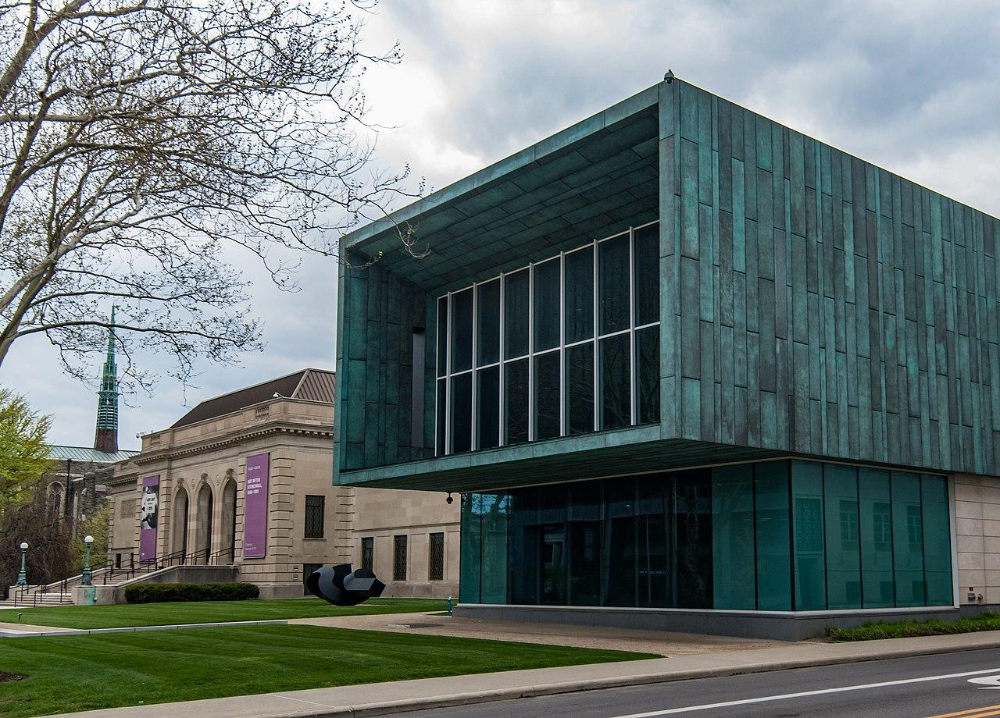

Arts & Culture
Columbus has a wide variety of museums and galleries. Its primary art museum is the Columbus Museum of Art, which operates its main location as well as the Pizzuti Collection, featuring contemporary art. The museum, founded in 1878, focuses on European and American art up to early modernism that includes extraordinary examples of Impressionism, German Expressionism, and Cubism. Another prominent art museum in the city is the Wexner Center for the Arts, a contemporary art gallery and research facility operated by the Ohio State University.
The Ohio History Connection is headquartered in Columbus, with its flagship museum, the 250,000-square-foot (23,000 m2) Ohio History Center, 4 mi (6.4 km) north of downtown. Adjacent to the museum is Ohio Village, a replica of a village around the time of the American Civil War. The Columbus Historical Society also features historical exhibits, focused more closely on life in Columbus.
COSI is a large science and children's museum in downtown Columbus. The present building, the former Central High School, was completed in November 1999, opposite downtown on the west bank of the River. In 2009, Parents magazine named COSI one of the ten best science centers for families in the country. Other science museums include the Orton Geological Museum and the Museum of Biological Diversity, both part of the Ohio State University.
